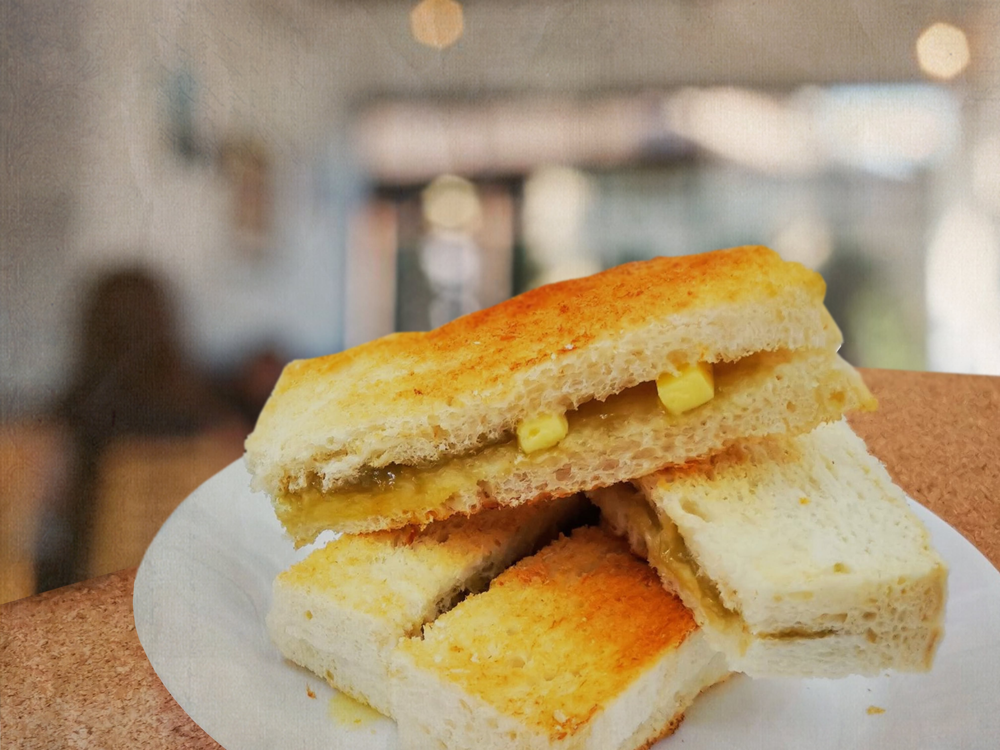
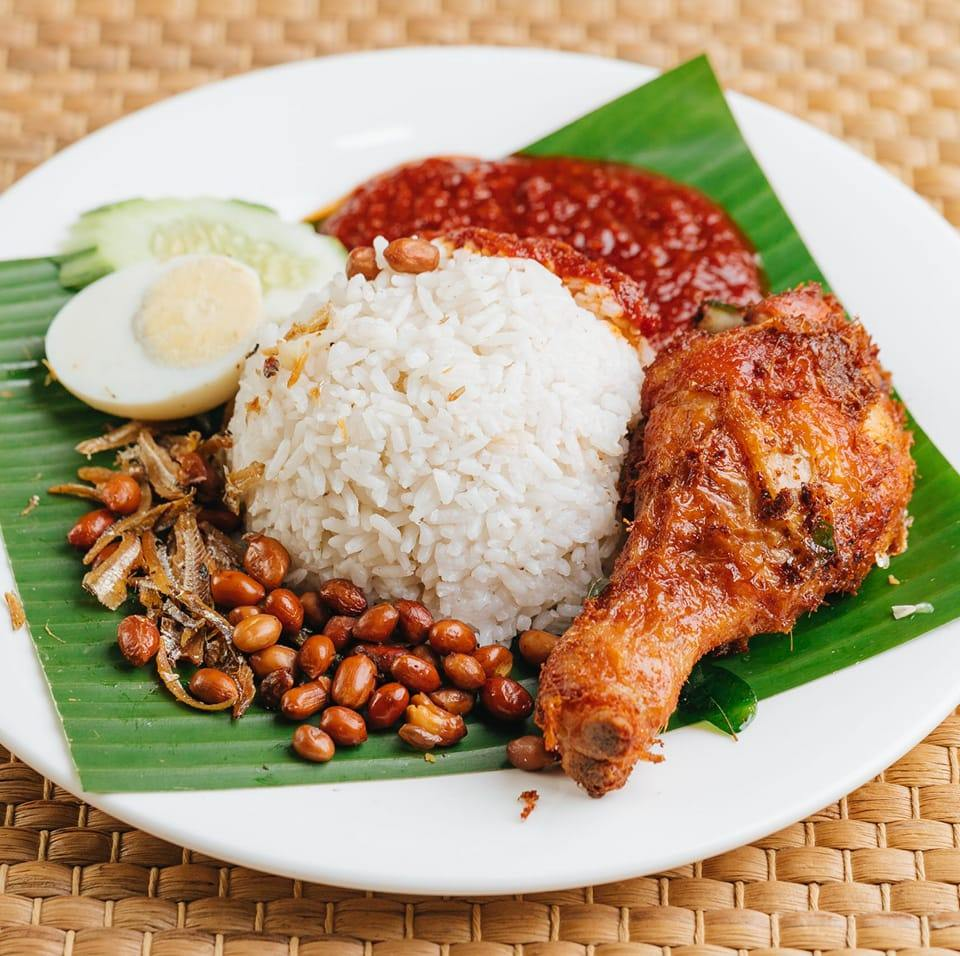
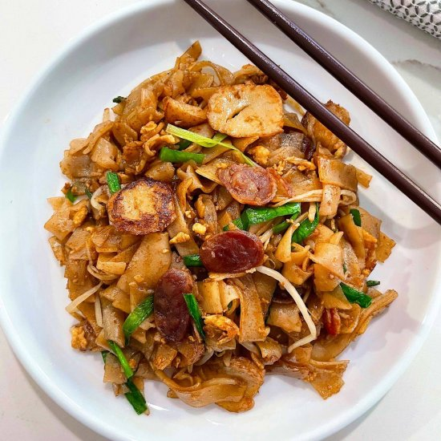
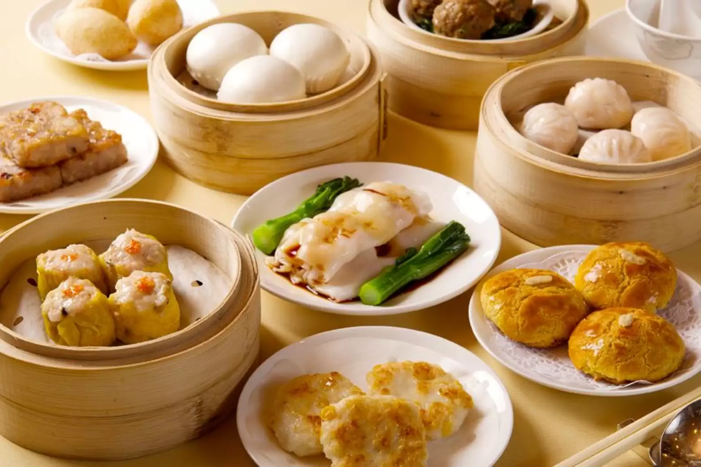

Chef's Recommendation

Butter & Kaya Toast
Kaya is famous throughout Malaysia, Singapore and other
Southeast Asia where pandan,
the star ingredient, grows as
a tropical plant with palm-like leaves. Kaya jam is made
with
fresh pandan, coconut milk, palm sugar and lots of eggs, which
make it creamy.
Butter-Kaya toast - Made of kaya, bread, and
butter. Kaya is homemade by the GaoGao
family with 20 years
of history.
Imagine warm and crispy toasted bread, slathered with a nice
layer of aromatic kaya
jam (Malaysian coconut egg jam), and
complete with a thin slice of cold butter. As
you hold the kaya toast
in your hand, the warmth of the freshly toasted bread melts the
butter
inside, and as you sink your teeth into the bread, the kaya jam and the
butter come
ooze out of the bread.

Nasi Lemak
Nasi lemak is a famous dish in Malaysia, Singapore,
Indonesia, and Brunei.
It is usually eaten at breakfast,
if you like, it can also be eaten as a stomach lining
or snack.
This tasty and quick nasi lemak recipe is made from
coconut milk, pandan leaves, and other ingredients,
and is usually served with sambal, anchovies and beans,
boiled egg and cucumber.
A combination of nasi lemak with fried chicken is the
favorite combo of people in Malaysia.
Try to imagine
biting the crispy chicken skin with the dip of the sambal!!!🤤

Kuey Teow Goreng
The stir-fried flat rice noodle dish, commonly known as
kuey teow goreng
in Indonesia or char kway teow in
Malaysia is believed to have been brough
by Chinese
immigrants over several centuries ago and most Asian
countries have
their own special version.
These rice noodles are usually stir-fried with different
fillings,
most commonly Chinese sausage, know as lap cheong,
bean sprouts, chives,
and eggs.
Kuey teow goreng, the Indonesian version, often includes
meatballs or
fishcakes and is sweetened with kecap manis,
Indonesian’s staple sweet soy sauce.
This stir-fried noodles
recipe is quick and authentic!

Dim Sum
Dim sum is a traditional Chinese meal made up of small
plates of dumplings
and other snack dishes and is usually
accompanied by tea. Similar to the way
that the Spanish
eat tapas, the dishes are shared among family and friends.
Typically dim sum is consumed during brunch hours
— late morning to lunchtime.
Dim sum dishes include an assortment of seafood, meat,
and vegetable dishes
that are prepared in various ways:
steamed, fried, or baked.
Are you Muslim but you wanna to try the taste of dim sum?
Dont worry, all
of our dim sum meat are made by chicken.
All all our dimsum dishes are 100% halal
and feel easy to enjoy it.🤗